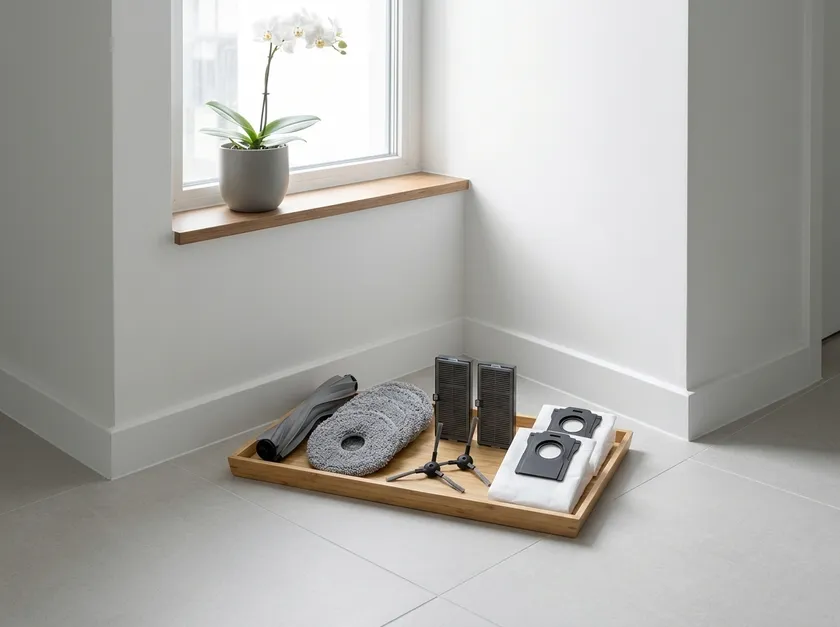
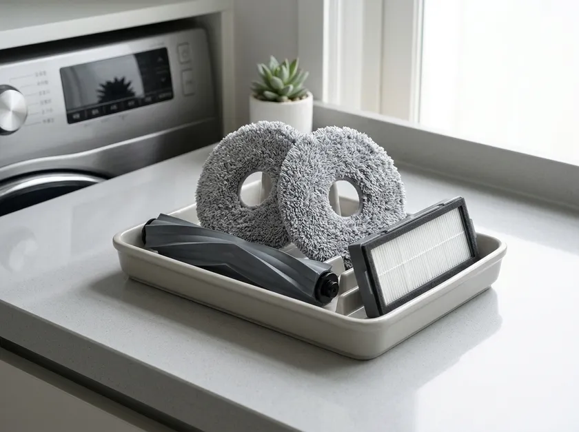

드리미 (Dreame)
드리미 L20 울트라·X30 울트라 vs X40·X50 필터·더스트백 규격 비교와 1년 세트
글·구성: 제이상점 · 기종별 1:1 호환 실물 점검 · 교체 주기 비교표 · 스마트스토어 패키지 안내

핵심 관리 · 선택 체크포인트
- 드리미 올인원 로봇청소기는 L20 Ultra·X30 Ultra 세대와 후속 X40·X50 세대의 먼지통 필터 길이 및 더스트백 카드 홀더 모양이 달라 주문 전 정확한 세대 구분이 꼭 필요합니다.
- 세로로 긴 블랙 프레임 필터와 브라운 크라프트 칼라 더스트백 확인: 드리미 L20 Ultra와 X30 Ultra는 세로 비율이 긴 블랙 프레임 직사각 필터와 갈색 크라프트지(판지) 칼라가 달린 대용량 더스트백, 그레이 스파이럴 고무 브러시, 원형 걸레 패드를 공유합니다.
- 드리미 L20 Ultra·X30 Ultra 고유 소모품 규격 비교표: 보유 기종이 L20 Ultra 또는 X30 Ultra일 때 확인할 핵심 부품 기준입니다.
- 보유 모델명이 드리미 L20 Ultra 또는 X30 Ultra인지 확인한 뒤 상세페이지에서 선택해 주세요.
- 세탁실 대리석 카운터 규격 대조와 다용도실 바구니 수납: 세탁실 카운터 위에서 새 세로형 필터 2개와 크라프트 칼라 더스트백, 스파이럴 브러시, 원형 걸레를 꺼내 점검하고 여분은 바구니에 정돈해 두세요.
실물 부품 디테일 · 관리 구성 이미지




부품 규격 · 점검 기준표
| 부품 구분 | 드리미 L20·X30 Ultra 규격 | 세대 구분 및 관리 포인트 |
|---|---|---|
| 세로형 블랙 프레임 필터 | 세로가 긴 직사각 워셔블 헤파필터 | X40·X50 단폭 필터와 호환 불가, 24시간 교대 건조 |
| 크라프트 칼라 더스트백 | 브라운 카드 홀더 대용량 먼지봉투 | 도크 가이드 홈에 끝까지 밀어 넣어 밀폐 장착 |
| 스파이럴 브러시·원형 걸레 | 실리콘 나선형 롤러 + 3암 브러시 + 원형 패드 | 양끝 회전축 머리카락 제거 및 걸레 패드 좌우 교차 장착 |
💡 교체 주기가 겹치는 필터·브러시·물걸레·더스트백은 단품 배송비를 여러 번 내기보다 드리미 L20 Ultra 기간별 세트(3개월·6개월·1년)로 미리 구비해 두면 물세척 후 24시간 교대 건조까지 끊김 없이 관리할 수 있습니다.
자주 묻는 질문 (FAQ)
Q. 드리미L20울트라의 세로형 블랙 프레임 필터 규격과 관리 기준은 무엇인가요?
A. 세로가 긴 직사각 워셔블 헤파필터 규격을 사용하며, X40·X50 단폭 필터와 호환 불가, 24시간 교대 건조 기준으로 점검·교체하면 청소 효율을 안정적으로 유지할 수 있습니다.
Q. 드리미L20울트라의 크라프트 칼라 더스트백 규격과 관리 기준은 무엇인가요?
A. 브라운 카드 홀더 대용량 먼지봉투 규격을 사용하며, 도크 가이드 홈에 끝까지 밀어 넣어 밀폐 장착 기준으로 점검·교체하면 청소 효율을 안정적으로 유지할 수 있습니다.
Q. 드리미L20울트라의 스파이럴 브러시·원형 걸레 규격과 관리 기준은 무엇인가요?
A. 실리콘 나선형 롤러 + 3암 브러시 + 원형 패드 규격을 사용하며, 양끝 회전축 머리카락 제거 및 걸레 패드 좌우 교차 장착 기준으로 점검·교체하면 청소 효율을 안정적으로 유지할 수 있습니다.
제이상점 1:1 검수 추천 패키지 · 구매 안내
메인 추천 구성
대표 구성 참고가 72,000원대 (옵션·쿠폰별 스마트스토어 결제 화면 기준)
1년 세트6개월 세트3개월 세트
![[정품] 드리미 세제 전용 세척액 세정제 소모품 X40 X50 X60](../../assets/img/dreame-cleaner-product-3adea154.webp)
☑️ 주문 전 확인해 두면 좋은 제이상점 안심 포인트
· 기종별 1:1 전용 규격 검수: 모델명·연식에 맞는 호환·정품 구성을 검수해 오주문 불안을 줄였습니다.
· 해외직배송 미리 주문 팁: 중국 구매대행·해외직배송 상품이므로 마지막 여분 1개를 꺼내 쓰는 시점에 개인통관고유부호와 함께 여유 있게 주문해 두시면 훨씬 경제적인 비용으로 끊김 없이 교체하실 수 있습니다.
· 기종별 1:1 전용 규격 검수: 모델명·연식에 맞는 호환·정품 구성을 검수해 오주문 불안을 줄였습니다.
· 해외직배송 미리 주문 팁: 중국 구매대행·해외직배송 상품이므로 마지막 여분 1개를 꺼내 쓰는 시점에 개인통관고유부호와 함께 여유 있게 주문해 두시면 훨씬 경제적인 비용으로 끊김 없이 교체하실 수 있습니다.
📖 더 많은 가정 내 사용 스토리와 상세 후기가 궁금하시다면
📱 네이버 블로그 모바일 원문 보기 ↗